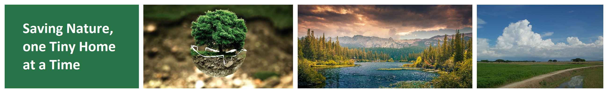
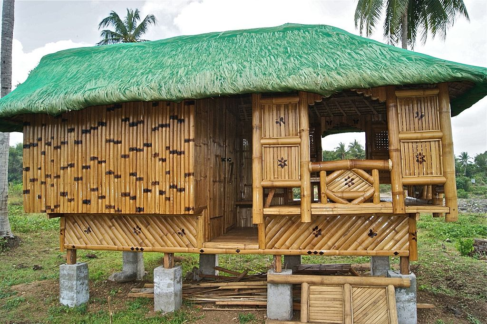
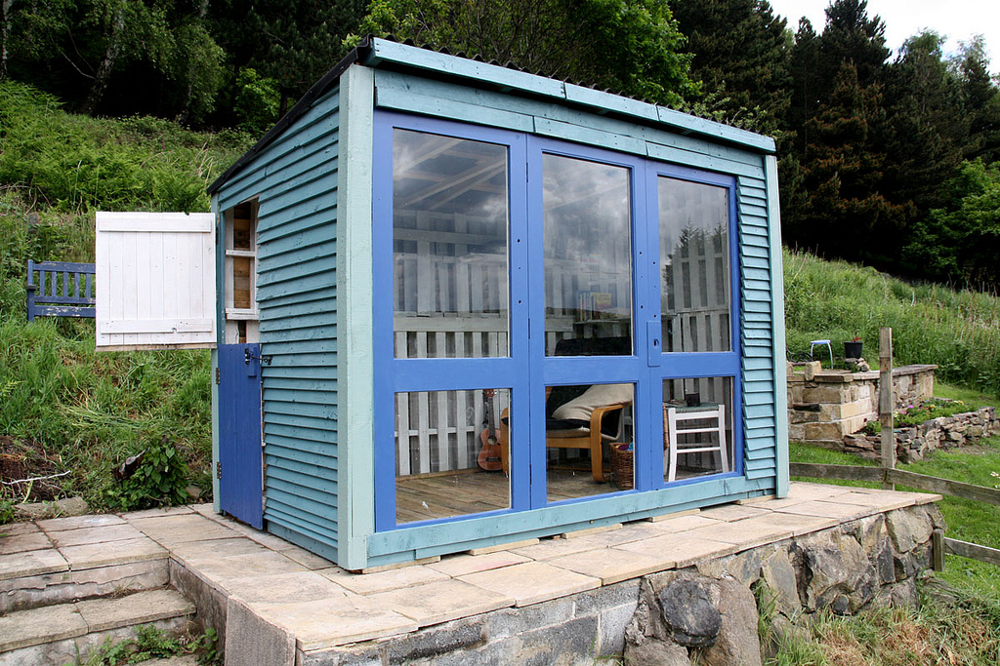
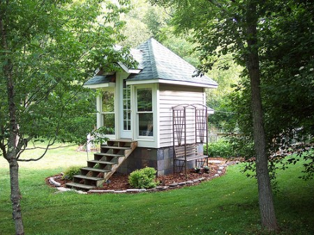
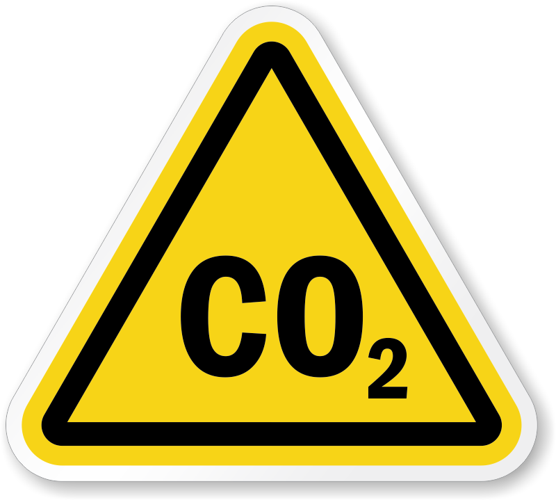
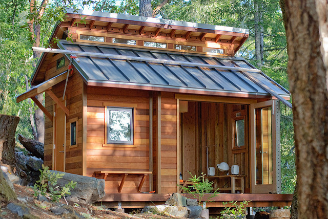

Environmental Benefits
Tiny Homes are Better for the Environment
How do small homes decrease your carbon footprint


Conventionally-sized homes utilze 45 lightbulbs on average, while the average for SmallHomes is just 6. That's 500 kWh worth of savings, or about 78% per year!

It takes 7 truckloads of lumber to build a conventional home, or 14 SmallHomes!


SmallHomes produce 2,000 pounds of carbon dioxide per year, less than 8% of how much a conventional home produces.

Residential dwelling produce 18% of greenhouse gasses. Lower your carbon footprint, save the environment, save yourself.
source: An Environmental Wonder!